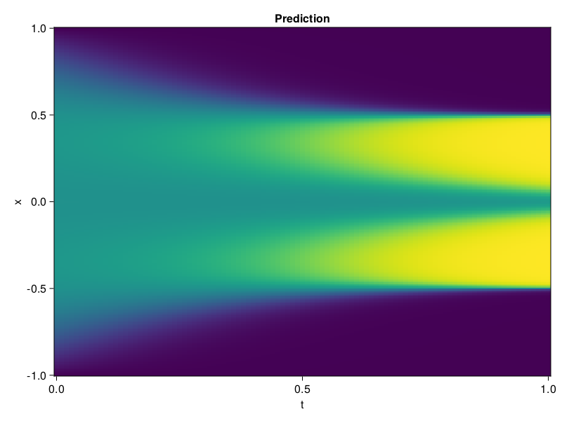

Allen-Cahn Equation with Sequential Training
In this tutorial we are going to solve the Allen-Cahn equation with periodic boundary condition from $t=0$ to $t=1$. The traning process is split into four stages, namely $t\in [0,0.25]$, $t\in [0.0,0.5]$, $t\in [0.0,0.75]$ and $t\in [0.0, 1.0]$.
using ModelingToolkit, IntervalSets
using Sophon
using Optimization, OptimizationOptimJL
@parameters t, x
@variables u(..)
Dₓ = Differential(x)
Dₓ² = Differential(x)^2
Dₜ = Differential(t)
eq = Dₜ(u(x, t)) - 0.0001 * Dₓ²(u(x, t)) + 5 * u(x,t) * (abs2(u(x,t)) - 1.0) ~ 0.0
domain = [x ∈ -1.0..1.0, t ∈ 0.0..0.25]
bcs = [u(x,0) ~ x^2 * cospi(x),
u(-1,t) ~ u(1,t)]
@named allen = PDESystem(eq, bcs, domain, [x, t], [u(x, t)])\[ \begin{align} - 0.0001 \frac{\mathrm{d}^{2}}{\mathrm{d}x^{2}} u\left( x, t \right) + 5 \left( -1.0 + \left|u\left( x, t \right)\right|^{2} \right) u\left( x, t \right) + \frac{\mathrm{d}}{\mathrm{d}t} u\left( x, t \right) =& 0.0 \end{align} \]
Then we define the neural net, the sampler, and the training strategy.
chain = FullyConnected(2, 1, tanh; hidden_dims=16, num_layers=4)
pinn = PINN(chain)
sampler = QuasiRandomSampler(500, (300, 100))
strategy = NonAdaptiveTraining(1, (50, 1))
prob = Sophon.discretize(allen, pinn, sampler, strategy)OptimizationProblem. In-place: true
u0: ComponentVector{Float32}(layer_1 = (weight = Float32[-1.8935395 0.2832056; 0.21972245 -0.07459798; … ; 0.10154221 -0.57590055; -1.6742634 -0.9971309], bias = Float32[0.0; 0.0; … ; 0.0; 0.0;;]), layer_2 = (weight = Float32[-0.108722284 0.69189864 … 0.0089108385 -0.65156984; 0.19135436 0.16149502 … -0.38807145 0.67504853; … ; 0.56093353 0.7207921 … 0.6013201 -0.6468635; -0.5378694 0.57860327 … -0.2625904 0.58457625], bias = Float32[0.0; 0.0; … ; 0.0; 0.0;;]), layer_3 = (weight = Float32[0.1503766 0.1708792 … -0.4400174 -0.048094064; -0.2997697 -0.59378046 … 0.19336158 0.19800799; … ; 0.049096078 0.32017508 … 0.64823383 0.60907567; -0.5417933 -0.18889506 … 0.013316704 -0.32962894], bias = Float32[0.0; 0.0; … ; 0.0; 0.0;;]), layer_4 = (weight = Float32[0.06986942 -0.512842 … 0.21896802 -0.5625873; 0.61740047 -0.15531363 … -0.022154588 -0.52043563; … ; 0.30341244 0.69147754 … 0.08676488 0.52229166; -0.1182418 -0.02765667 … -0.68968374 0.1819756], bias = Float32[0.0; 0.0; … ; 0.0; 0.0;;]), layer_5 = (weight = Float32[-0.16663465 0.26849607 … -0.46546417 -0.7196382], bias = Float32[0.0;;]))We solve the equation sequentially in time.
function train(allen, prob, sampler, strategy)
bfgs = BFGS()
res = Optimization.solve(prob, bfgs; maxiters=2000)
for tmax in [0.5, 0.75, 1.0]
allen.domain[2] = t ∈ 0.0..tmax
data = Sophon.sample(allen, sampler)
prob = remake(prob; u0=res.u, p=data)
res = Optimization.solve(prob, bfgs; maxiters=2000)
end
return res
end
res = train(allen, prob, sampler, strategy)u: ComponentVector{Float32}(layer_1 = (weight = Float32[-2.005895 -0.2771358; 0.8156901 -1.2154654; … ; 0.27034256 -1.7535638; -1.5339558 -0.96703994], bias = Float32[0.94030994; 1.2468238; … ; 1.9593867; 1.2536749;;]), layer_2 = (weight = Float32[0.51343703 0.7240954 … -0.0124131115 -0.1242838; 0.45018446 -0.10779907 … -0.56189924 0.6635884; … ; 0.29839522 0.99195343 … 0.7109102 -0.50649005; -0.52236116 1.1496536 … 0.22707468 0.5076719], bias = Float32[0.33692044; 0.032470662; … ; 0.8072324; 0.325469;;]), layer_3 = (weight = Float32[0.735036 0.27577588 … -0.4572165 0.20214988; -0.32896978 -0.1085146 … 0.29256356 0.24982071; … ; 0.17928721 0.45339146 … 0.04397094 0.56699234; -0.75286233 -0.41716218 … 0.17855251 -0.5866472], bias = Float32[0.66022086; -0.33017156; … ; -0.19816762; -0.054339096;;]), layer_4 = (weight = Float32[0.003818415 -0.7470594 … 0.06078111 0.07269891; 0.75211334 -0.11247014 … 0.0685174 -0.4772304; … ; 0.51844925 0.8592201 … -0.10571674 0.7119547; 0.48062372 0.4988517 … -1.7152028 0.8712853], bias = Float32[-0.12997715; 0.28154966; … ; 0.07108581; 0.5036359;;]), layer_5 = (weight = Float32[0.06509141 0.0265487 … -0.529782 -0.75541085], bias = Float32[-0.5093962;;]))Let's plot the result.
using CairoMakie
phi = pinn.phi
xs, ts = [infimum(d.domain):0.01:supremum(d.domain) for d in allen.domain]
axis = (xlabel="t", ylabel="x", title="Prediction")
u_pred = [sum(pinn.phi([x, t], res.u)) for x in xs, t in ts]
fig, ax, hm = heatmap(ts, xs, u_pred', axis=axis)